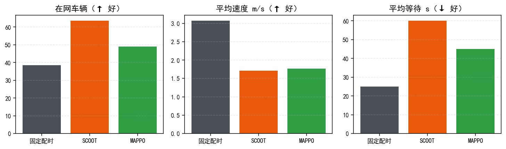
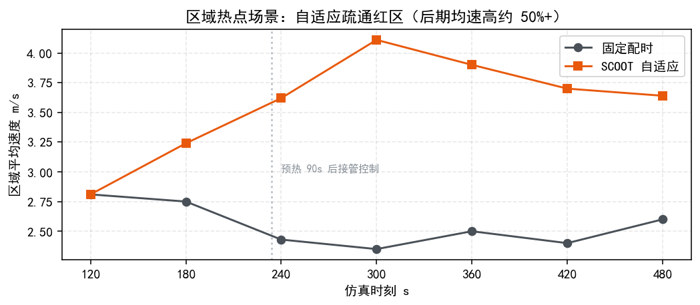

STYLE C
XH 202613 · Graduation Defense
雄安车路云协同
管控平台
面向多路口拥堵的感知—预测—控制闭环，以可复现实验验证协同控制价值。
数字孪生STGCN 预测MAPPO 控制安全降级
SYSTEM ARCHITECTURE
云边端闭环：从实时状态到安全执行
SUMO 数字孪生
车辆、路口与信号状态STGCN 预测
时空关联与短时趋势MAPPO 决策
31 维观测 → 2 个 logits信号执行
异常时逐级安全降级90 s
预热后进入稳定评估窗口
5 s
控制决策周期
30 s
指标采样与前端刷新基准
EXPERIMENT EVIDENCE
标准场景对比：提升来自系统协同，而非单点指标

~314到达车辆规模
62.5%到达数 8 → 13 的提升
100%ONNX FP32 验证一致率
0.0074 msFP32 单样本推理耗时
答辩口径：在同一需求、同一统计窗口和同一随机种子下比较；在网车辆数只表示瞬时存量，不等同于通行量。
HOTSPOT ANALYSIS
热点窗口内，控制策略加速拥堵恢复
360–480 s 拥堵窗口
平均速度由约 2.4–2.6 m/s 恢复至 3.6–4.1 m/s。页面只突出趋势、窗口与边界，避免把单次曲线包装成普适结论。
展示时同步标明投放量、基线、统计口径和仿真边界。
